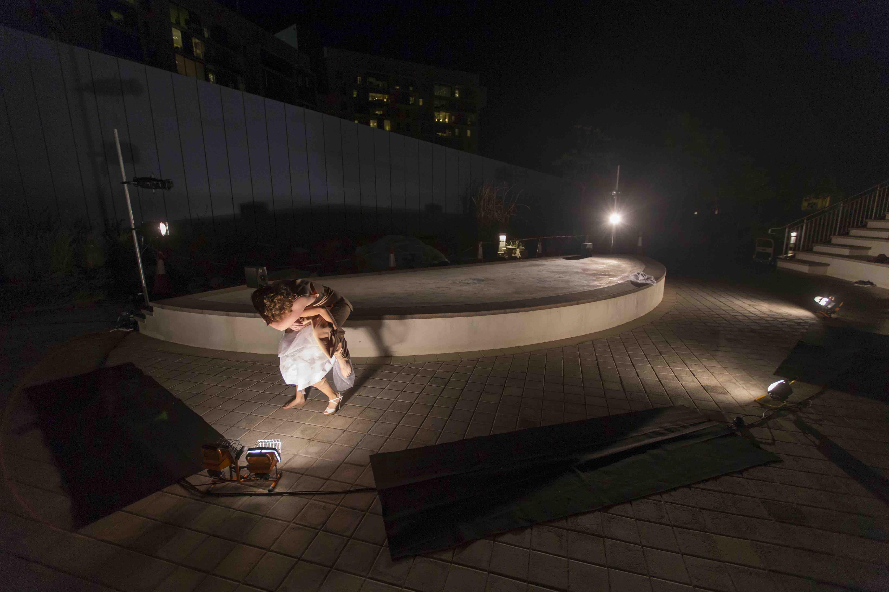

MARIKA NIKO


experience
Chreographer: Experience
memory is a partial victory over death
2019 Site-Specific Dance Performance
A site-specific dance performance, the works blends memory and materiality in a duet that challenges the presence of time and the body reflected and refracted back to them.

Courtesy of The NYUAD Theater Program, Photo Credits To Harshini Karunaratne
Two Bodies
2018 Video Performance


Screenshot from Video, Credits to Alexa Mena and Arthur De Oliveira
in the becoming
2017 Site-Specific Dance Performance
Being inspired by Butoh, this piece talks about how my body actively chooses, embodies, deforms, habitualizes, and takes on the pressure not from society but from my own self. Directed, choreographed, performed, and designed by myself.


Courtesy of The NYUAD Theater Program, Photo Credits To Koh Terai